DARI KITA,OLEH KITA,UNTUK BOGOR.
Kami adalah Komunitas Keluarga yang berada di wilayah bogor.
Kami merupakan pegiat di dunia sharing, berkumpul dan saling
berkolaborasi untuk menciptakan sebuah value edukasi tentang
penting nya keharmonisan dengan mengutamakan tanggung jawab
terhadap sesuatu dan kepada masyarakat secara luas.Kami menciptakan
sebuah atmosfir bagi setiap bagian keluarga kami untuk berkembang,
melalui sebuah tulisan atau konten. Kami percaya bahwa itu dapat
memberikan dampak positif bagi bangsa Indonesia.
ALASAN KAMI TERBENTUK
MENCIPTAKAN KELUARGA BARU.
Bogor-family terbentuk pada tanggal 22 Juni 2019. Bogor-family memiliki
keinginan yang sangat besar bagaimana seseorang memiliki kesadaran bahwa
apa yang diciptakan memiliki pengaruh yang besar bagi lingkungan bahkan
bangsanya. Melalui komunitas ini, kami saling belajar,bertukar ilmu dan
informasi serta bersama-sama melakukan edukasi kepada masyarakat tentang
penting nya keharmonisan secara luas.Baca lengkapnya »
YANG KAMI KERJAKAN
TOTR (Ta'jil on THE ROAD 2017) at jambu dua IKPM bogor.!!!
SILATURRAHIM AKBAR BERSAMA IKPM BOGOR..!!!
PANTIA PERPULANGAN AKHIR TAHUN 2017
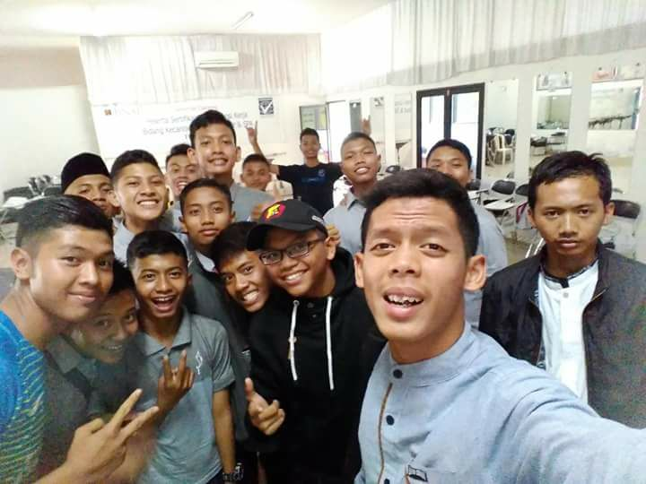
HIMPUNAN MAHASISWA BUITENZORG
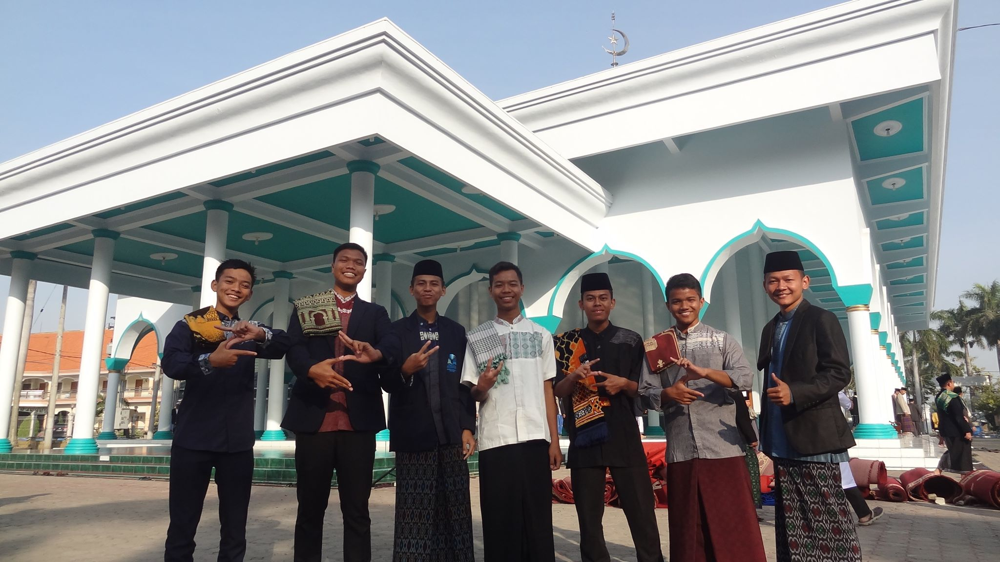
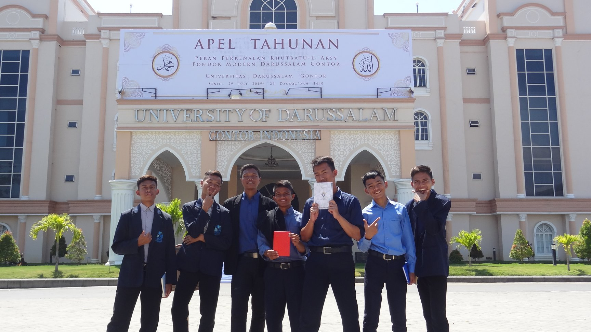
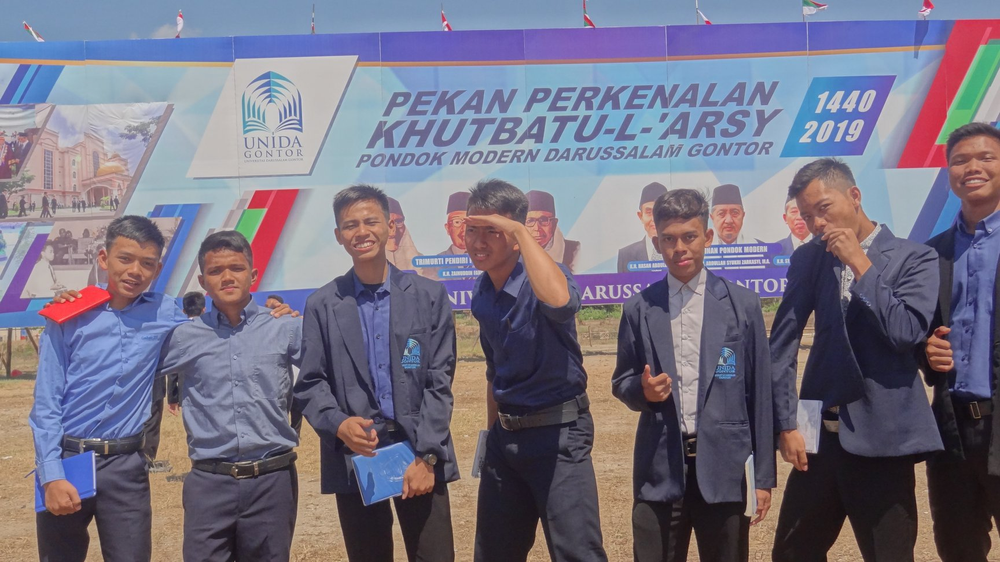
PANITIA BIMASGO 2019
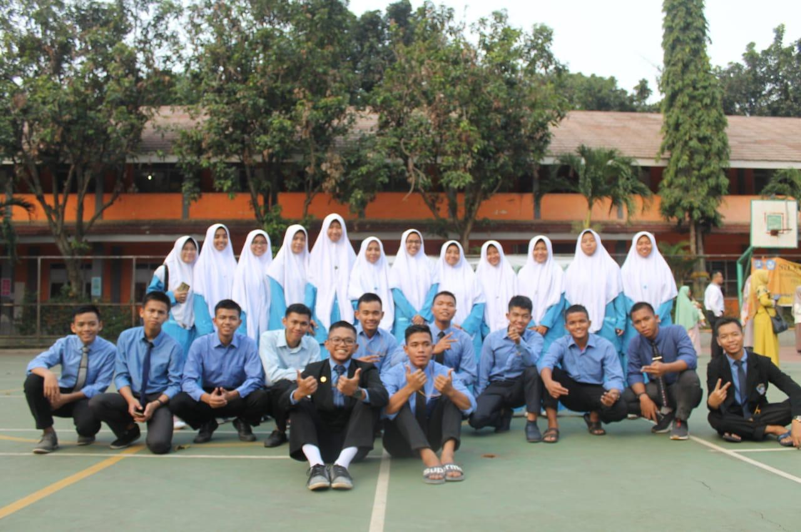
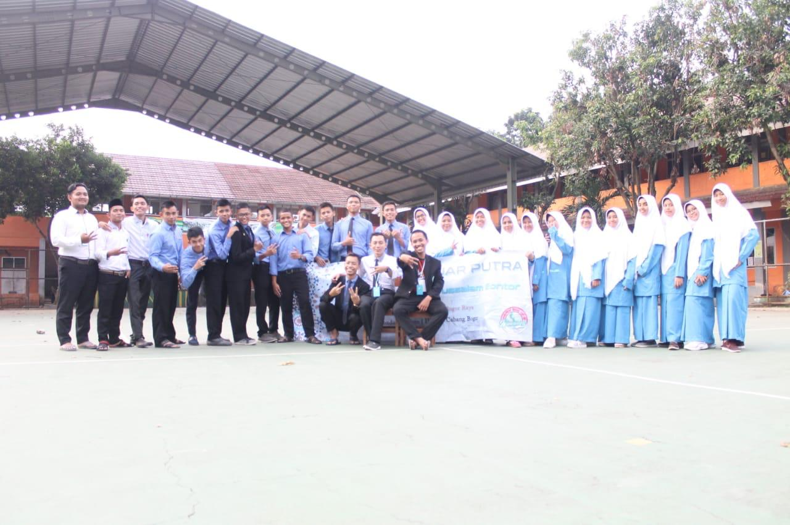
KETUA KONSULAT BOGOR GUARDIAN GENERATION
Firman fadillah
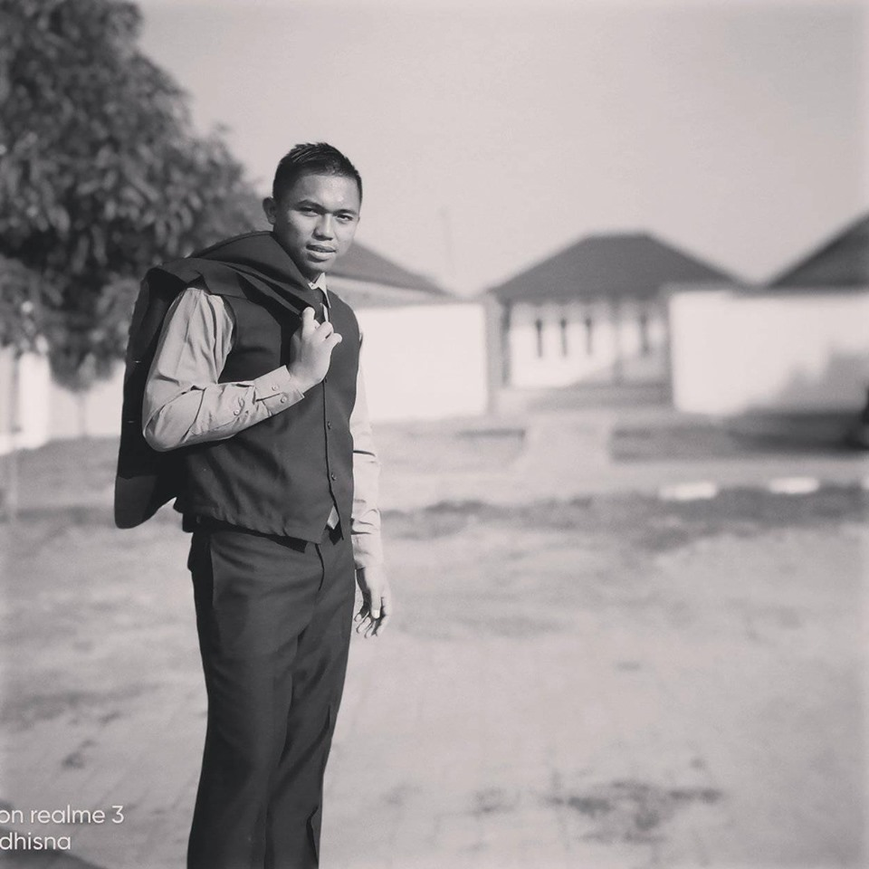
Komunitas ini terdiri dari berbagai macam latar belakang anggota,
baik dari usia, tingkat pendidikan, gender, agama dan suku bangsa.
Kami semua bersatu, dalam satu kegemaran yaitu “PENGAWALAN”
di mana hal tersebut merupakan kontribusi kami bagi bangsa dan
negara.Dan group ini juga terdiri dari sifat yang berbeda beda
dan juga watak yang berbeda beda,tetapi itu semua tidak menjadi
halangan bagi kami untuk tetap eksik di masyarakat untuk tetap
berdiri sebagai group yang akan tetap berdiri sampai di masa depan
M.Harisul Islam
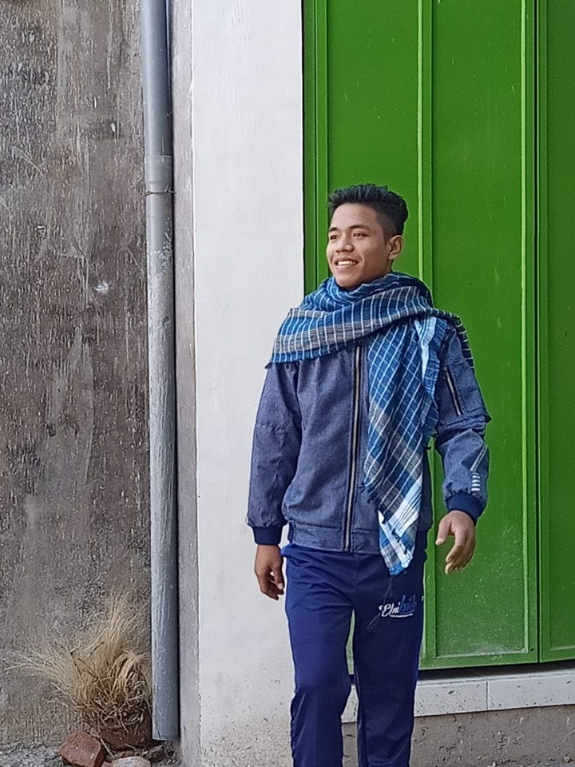
Banyak orang yang tidak memiliki semangat dan percaya diri untuk
mengerjakan hal-hal yang lebih baik, lebih banyak, dan lebih menantang.
Padahal setiap orang sebenarnya mempunyai kemampuan tersebut. Tinggal
tergantung pada orang itu sendiri.Jika Anda termasuk orang yang sulit
untuk membangun semangat dan percaya diri, segera ubah kebiasaan tersebut.
Apalagi kalau Anda mempunyai mimpi atau target yang ingin dicapai. Tanpa
semangat dan motivasi untuk merealisasikannya, Anda tidak akan pernah
mencapai target maupun tujuan hidup Anda.
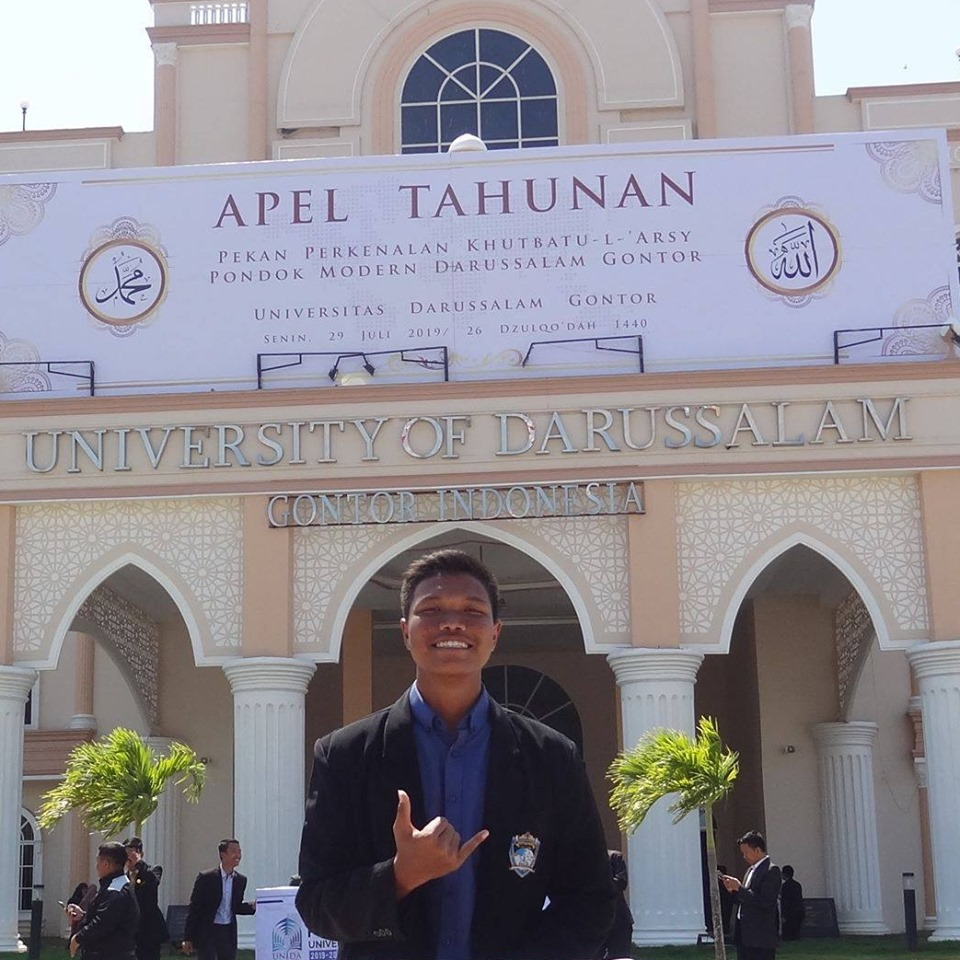
Ridho Dwi Fachri Ambardi
“Semua orang memiliki saat-saat di atas dan di bawah yang mereka harus
mengamambil pelajaran dari situ, tetapi setiap pagi saya memulai hari dengan
berkata kepada diri saya, 'Ini akan menjadi hari yang baik!'”
Tips: Pikiran adalah kunci bagi diri Anda. Dengan menyematkan sesuatu
yang positif, maka alam akan membantu tubuh Anda mewujudkannya. Begitupun
dengan pikiran negatif sehingga dapat mempengaruhi kegiatan Anda sepanjang
hari. Percayalah setiap permulaan yang baik, akan berakhir dengan baik.
Jadi berusahalah untuk selalu berpikir bahwa hari Anda selalu hebat dan
MENYENANGKAN.
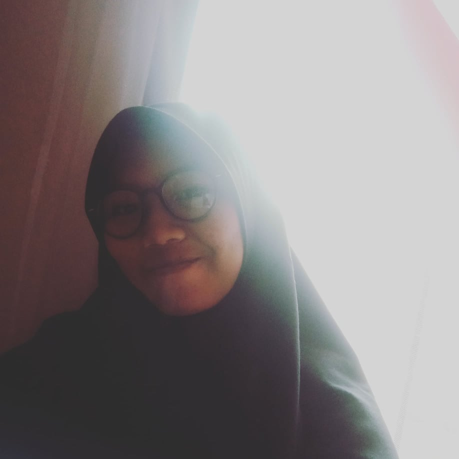
Devina Tiffany Azizah
“Setiap hari saya merasa bahwa ini adalah berkat dari Tuhan. Dan saya menyadari
bahwa setiap hari adalah permulaan yang baru. Ya, semuanya terasa cantik.”.
Tips: Mungkin Anda menganggap setiap hari biasa-biasa saja, tidak ada yang
spesial. Sebetulnya ini yang harus Anda ubah. Hari ini tidak sama dengan hari
kemarin, dan besok tidak sama dengan hari ini. Percaya saja bahwa hari esok akan
lebih baik dari hari ini dan kemarin. Lakukan saja yang terbaik, entah itu pekerjaan,
tugas kantor atau kuliah, atau sesuatu yang lain.
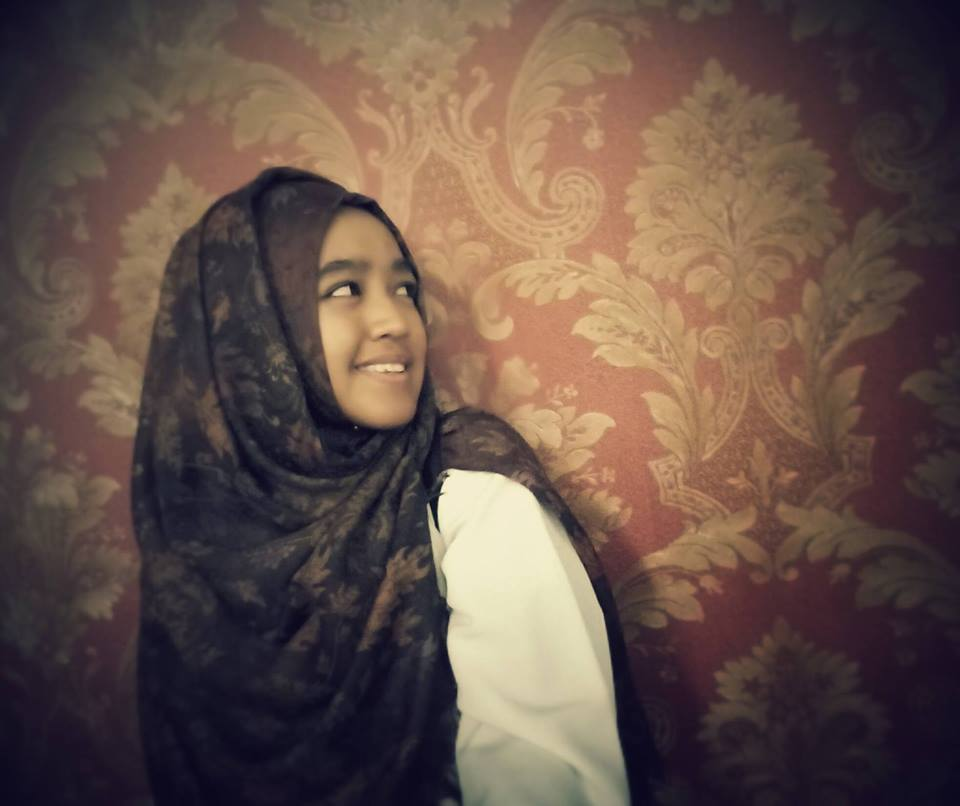
Lutfiah Putri Annida
“Tidak pernah ada malam atau masalah yang bisa melawan matahari terbit atau harapan.”
Tips: Apakah Anda pernah merasa hidup Anda selalu susah dan menyedihkan? Itu karena
Anda selalu melihat hidup dari sisi buruk saja. Anda tidak pernah mengingat kebahagiaan
yang pernah dirasakan. Anda selalu merasa menjadi orang sial atau paling tidak beruntung
dan selalu diliputi berbagai masalah yang tak kunjung selesai.Kesalahan dari orang seperti
ini adalah orang yang tidak mempunyai harapan dan tidak pernah mengandalkan Tuhan. Meski
dihadang berbagai masalah, selain berikhtiar, berharap kepada Tuhan akan membantu Anda
menyelesaikan setiap masalah hidup. Percayalah, harapan selalu ada bagi orang-orang yang
mau berusaha.
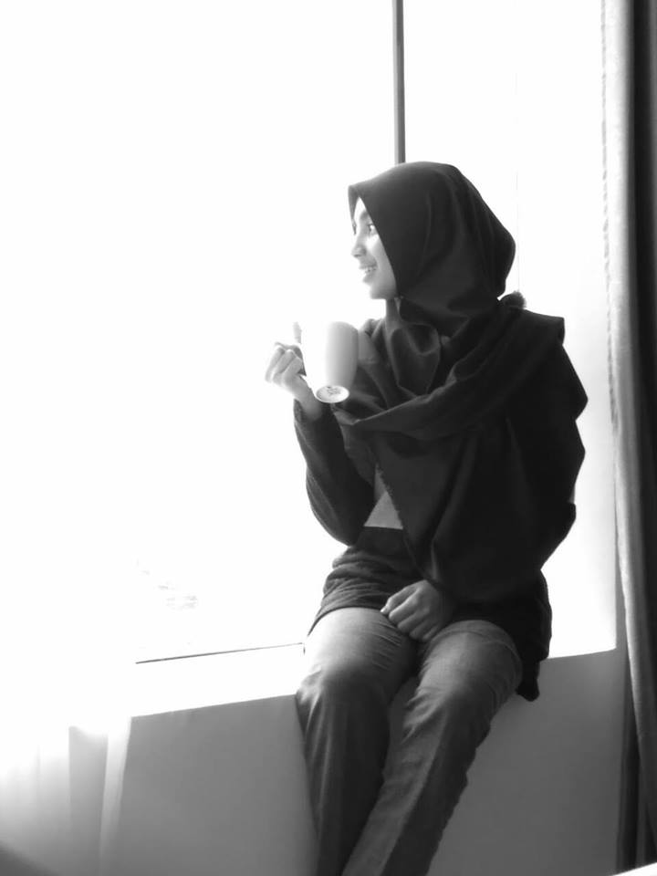
Aqila Rahma
Berusaha Membuat Hidup Bahagia
“Saya bangun setiap pagi dan hari itu akan menjadi hari yang hebat.
Anda tidak akan pernah tahukapan hari itu berakhir jadi saya memilih
untuk menolak hari yang buruk.” -
Tips: Awali hari Anda dengan selalu berpikir positif. Katakan bahwa Anda
akan mendapatkan hari yang hebat dan menyenangkan. Dengan begitu, semesta
pun akan mendukung. Buat hidup Anda bahagia setiap hari, karena Anda tidak
pernah tahu kapan hari itu akan berakhir dan akan kehilangan kesempatan.
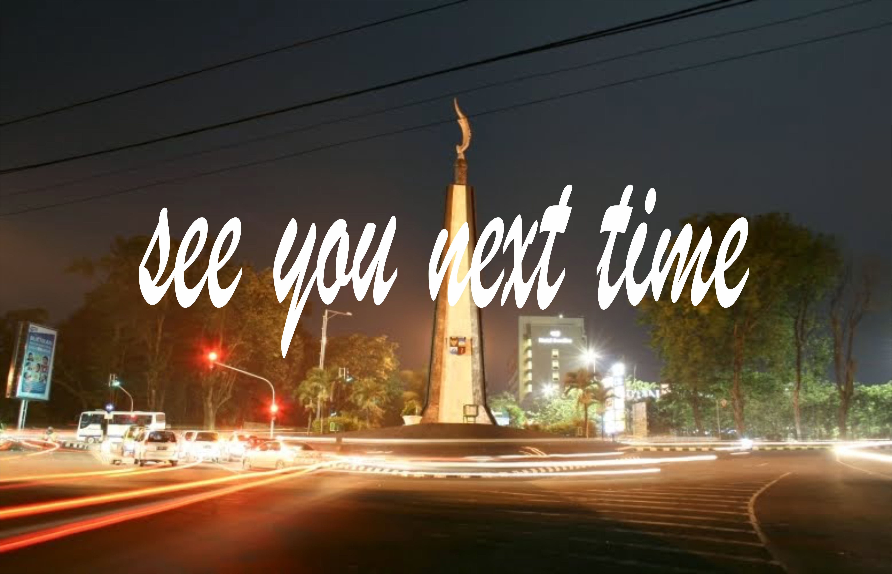
bogor family
Tempat untuk berbagi pengalaman
dari setiap individual